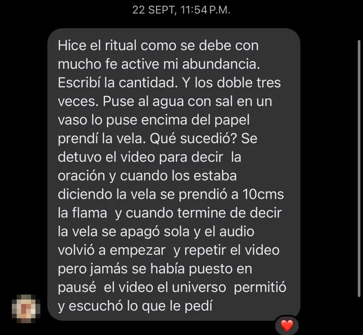
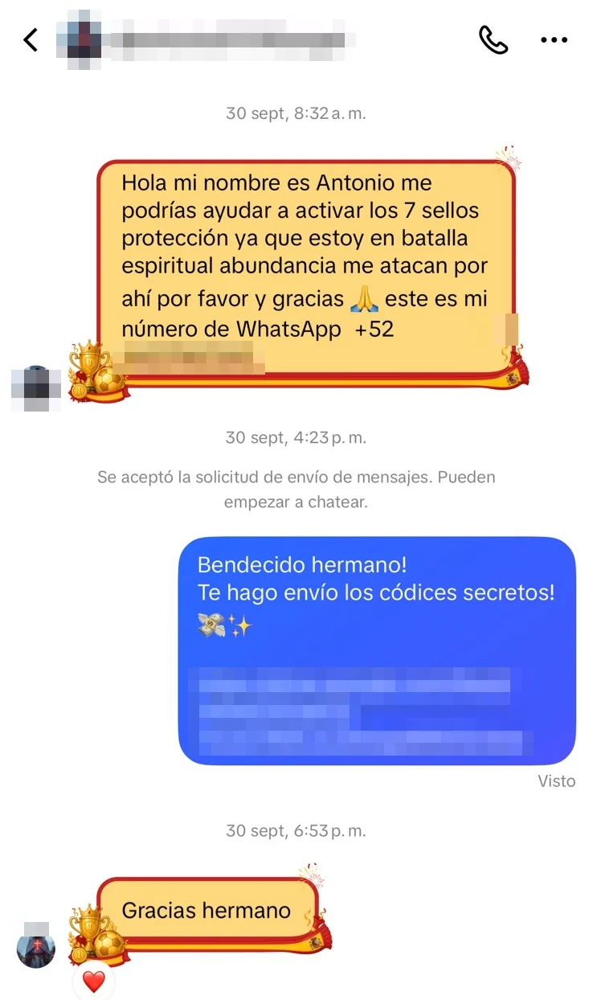
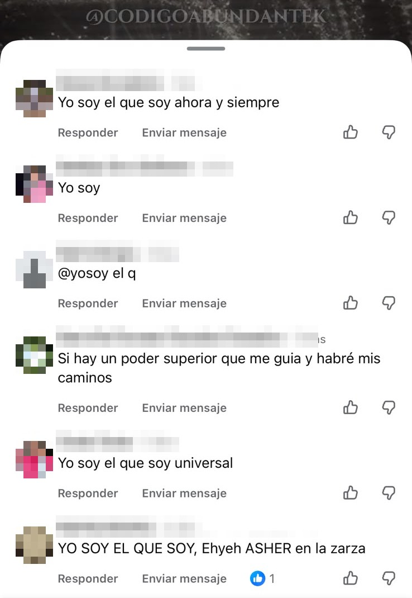
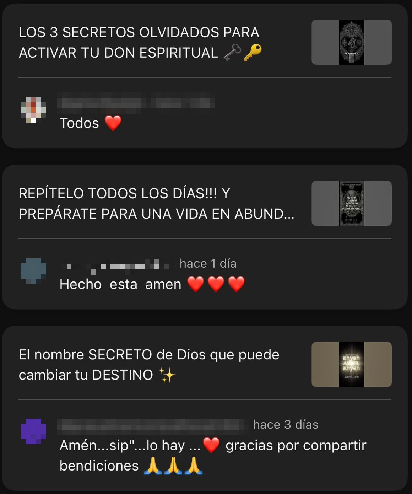

Ernesto dejó unos mensajes de voz para quienes se reconocen en su mapa
Sube el volumen o ponte audífonos.
Sube el volumen o ponte audífonos.
La última página del mapa




Mensajes y comentarios reales de nuestra comunidad de más de 45 mil personas. Nombres y fotos ocultos por privacidad.
No es magia ni una promesa de dinero. Es una práctica diaria, guiada por la voz de Ernesto, para ordenar por dentro lo que se traba por fuera. Si en 7 días sientes que no es para ti, te devuelven el 100%.
No. El audio te guía de principio a fin y el manual explica cada práctica paso a paso.
No. Usamos la Kabbalah como un mapa de estudio y práctica, abierto a cualquier persona.
Sí. No necesitas cambiar tus creencias ni dejar tu fe. Muchas personas en nuestros comentarios rezan desde su fe y viven esta práctica como un complemento a su oración.
Tu celular o computador, audífonos y 33 minutos al día en un lugar tranquilo.
33 días. Un audio de 33 minutos al día, a la misma hora si puedes.
El audio Activación Tikún 33 y un manual con 8 guías a color: 12 Rituales para el Éxito, 11 Principios Kabbalísticos, Dinero Cósmico, Los Decretos de Poder, Geometría Sagrada, La Mente Abundante, Meditaciones de la Prosperidad y 33 Oraciones para la Riqueza.
En Hotmart, la plataforma segura de pagos. Ves el precio en tu moneda y los métodos de tu país: tarjeta, PayPal y opciones locales, como Mercado Pago en México. Es un pago único, no mensual.
Apenas pagas, te mostramos en pantalla cómo entrar y te llega un correo de Hotmart con tu acceso. Si no lo ves, revisa promociones o spam. Si pagas en efectivo, llega cuando el pago se confirma.
Porque queremos que cualquier persona que se reconozca en su mapa pueda empezar a trabajarlo, sin que el precio sea la traba. Es nuestro precio de lanzamiento.
Tienes 7 días de garantía. Pides el reembolso desde Hotmart y te devuelven el 100%, sin preguntas.
Una meditación de 11 minutos con la voz de Ernesto, para escuchar antes de dormir. Viene de regalo para quien empiece su Activación antes del 31 de octubre.
Riesgo ceroEscúchalo durante 7 días. Si sientes que no era para ti, te devuelven el 100% de tu dinero, sin preguntas.
Sí, quiero que el dinero se quedePago seguro en Hotmart · Precio en tu moneda · Garantía de 7 días